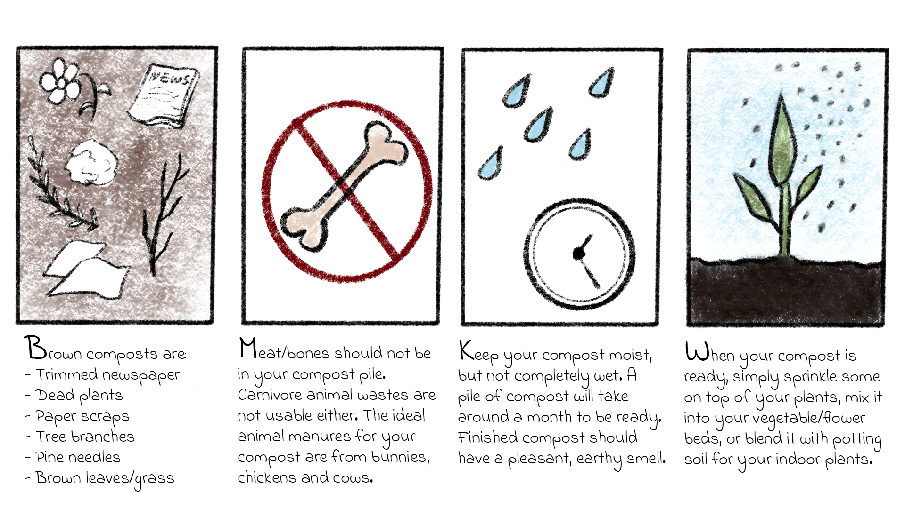

HOME
Data Visualization
In Canada
How to Compost
Compost Tips
Mini Game
About
This Project
The Creator
To start your own compost pile...
; ;
External Resources
"Composting by households in Canada." Statistics Canada.
"Solid Waste Diversion and Disposal." Canada.ca.
The Compost Council of Canada.
"How to Start Your Own Compost Pile." Canadian Living.
"How to Use Compost." NYC Compost Project.